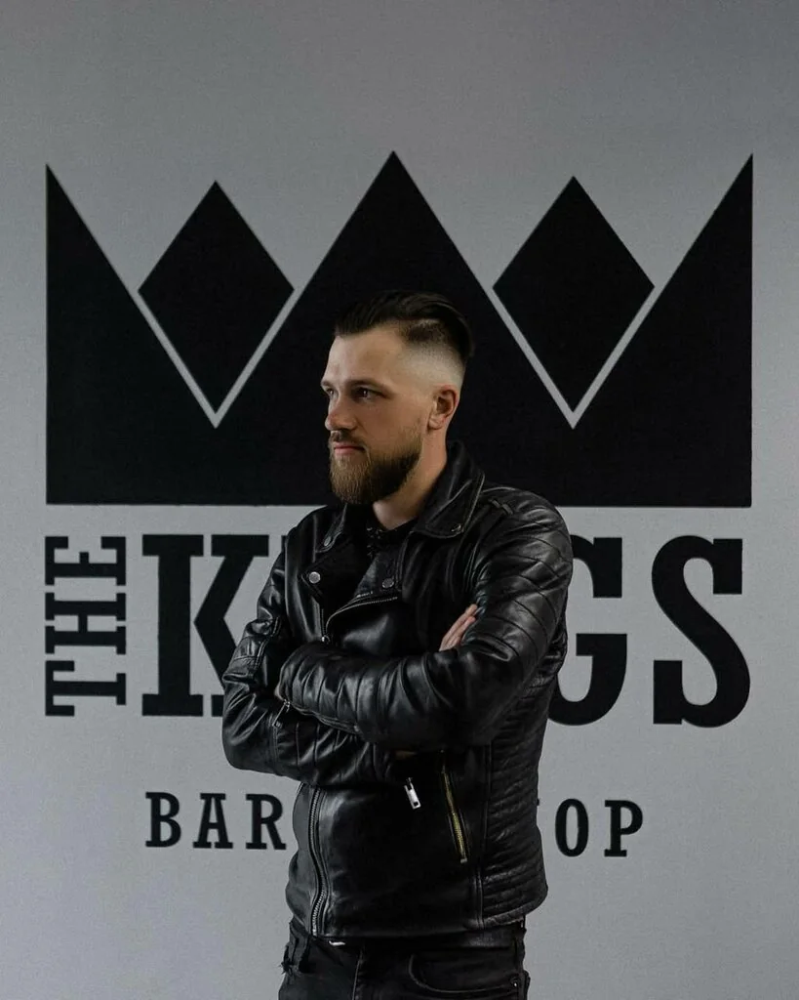
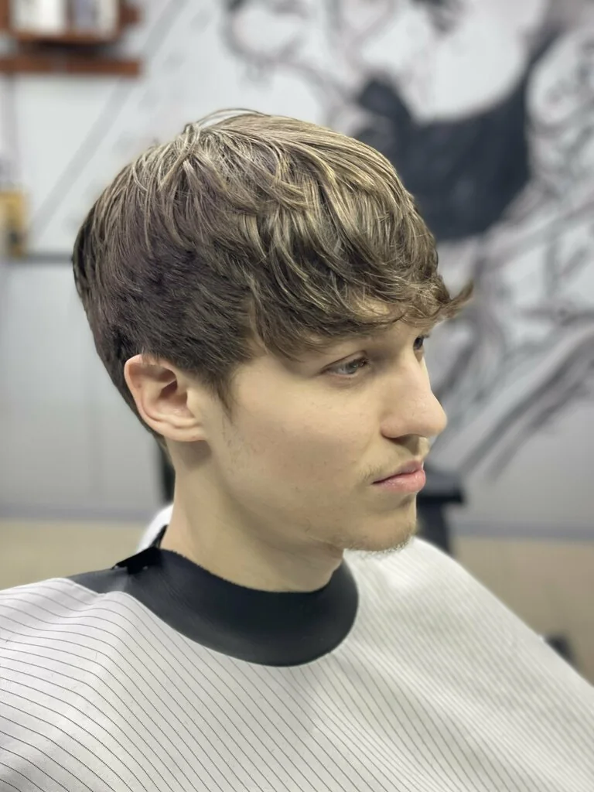
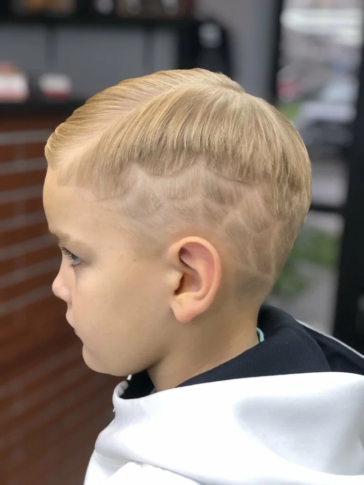
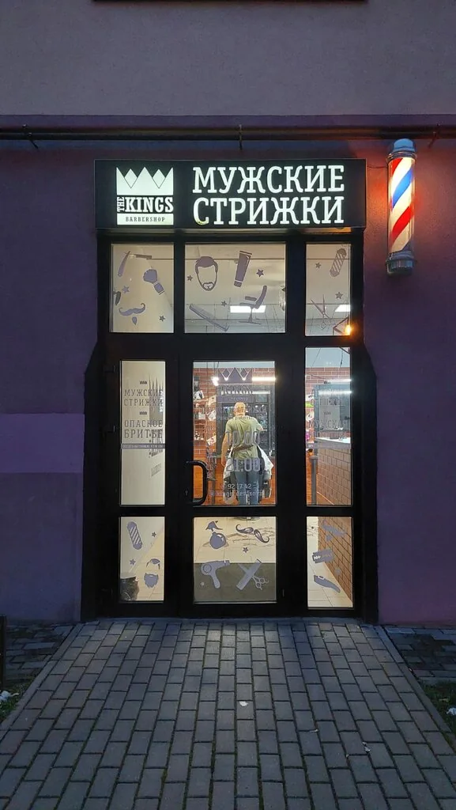
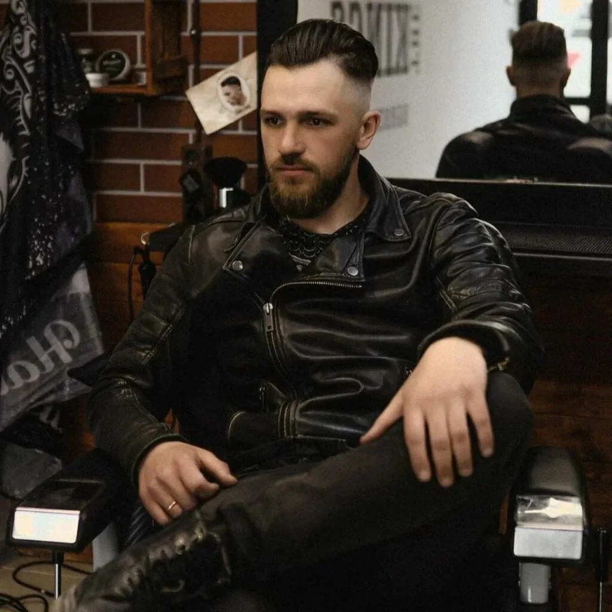

МЕСТО ДЛЯ ПОРТРЕТА
БАРБЕР / ИМЯ УТОЧНЯЕТСЯ
The Kings — барбершоп в Калининграде, где слышат, какую стрижку ты хочешь.

01 / УСЛУГИ И ЦЕНЫ
Выбери услугу и уровень мастера. Продолжительность и стоимость добавим после подтверждения актуального прайса.
Актуальные цена и время — в системе записи The Kings. Поля на сайте ждут подтверждённого прайса.
02 / НАШИ РАБОТЫ
Реальные фотографии стрижек из карточки The Kings. Тип стрижки и имя мастера добавим после подтверждения.


Подтверждённой пары «до / после» пока нет — сравнение появится вместе с такими снимками.
03 / МАСТЕРА
Знакомство с командой начинается здесь. Портреты, имена и слова мастеров добавим после подтверждения состава команды.
БАРБЕР / ИМЯ УТОЧНЯЕТСЯ
СТАРШИЙ БАРБЕР / ИМЯ УТОЧНЯЕТСЯ
Актуальный состав команды и свободное время можно посмотреть при записи.
04 / АТМОСФЕРА THE KINGS
Можно прийти со своей идеей или попросить совета. Обсудим, что подойдёт, и сделаем стрижку, которую будет удобно носить каждый день.
Записаться

05 / ОТЗЫВЫ
Короткие отзывы из карточки The Kings в Яндекс Картах.
Все отзывы на Яндекс Картах ↗«Все отлично, и четко по времени»
«Отличное место, все понравилось, стрижкой доволен!)»
«Быстро классно удобно»
06 / ЗАПИСЬ И КОНТАКТЫ